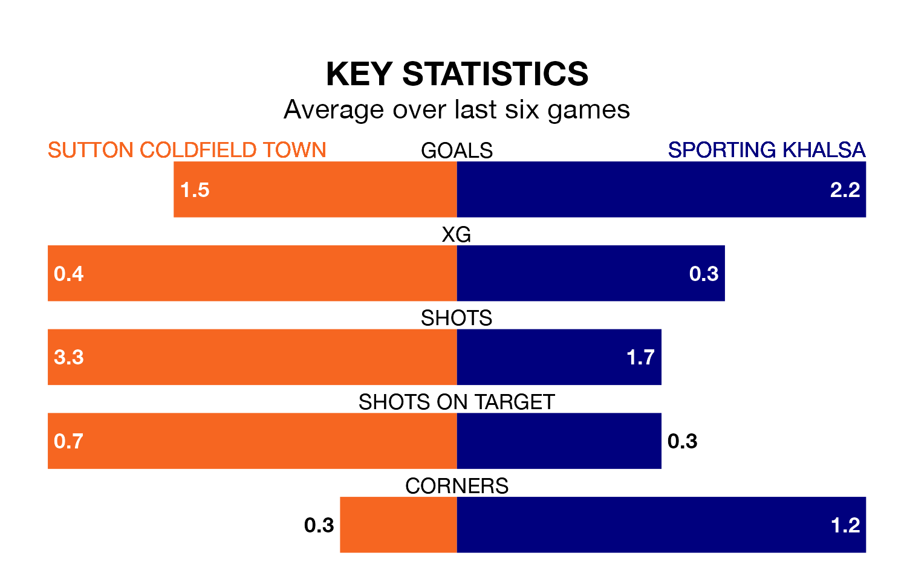

Sutton Coldfield Town host Sporting Khalsa on Saturday at Central Ground in Northern Premier League Division One Midlands.
In their last league match, on January 13, Sutton Coldfield lost to Leicester Road 3-1 at home.
Sporting won, 3-0 at home against Coventry Sphinx.
With 39 goals in 23 games so far this season, Sutton Coldfield are scoring more than average in the league with 1.7 goals per game. And they are conceding at an average rate, letting in 34 goals at a rate of 1.5 per game.
Sporting, meanwhile, are average scorers, with 1.5 goals per game. They have also conceded 1.5 goals per game.
In the last five years, Sutton Coldfield and Sporting have played each other on five occasions. Sutton Coldfield won two of them and Sporting three.
On average, Sutton Coldfield scored 1.4 goals and Sporting 1.6 in those matches.
Their last meeting was on October 28, when Sutton Coldfield won 2-0 away.
The away team are seventh in the table after 23 games, of which they have won 11 and drawn three, earning 36 points.
Town are two places behind Sporting in ninth, with 10 wins and five draws putting them on 35 points.
The hosts are in mixed form in Northern Premier League Division One Midlands, with two wins and two draws from their last six games.
With three wins and a draw over that period, Sporting's form is slightly better – they have taken 10 points from 18, compared to Sutton Coldfield's eight.
Updated: 13:09 (UTC), 17/01/24